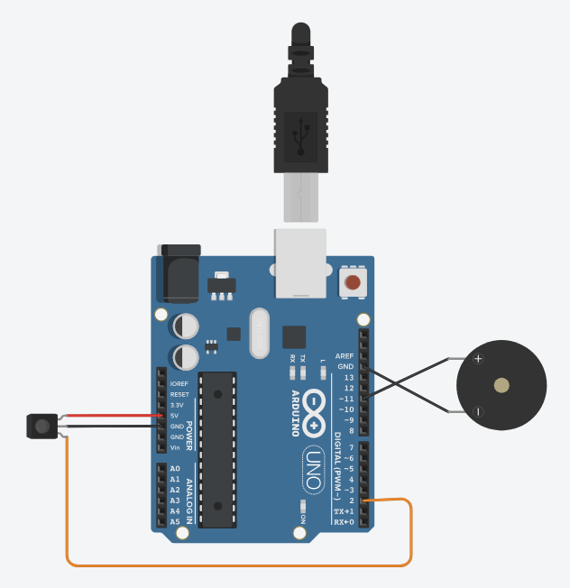

Security Alarm System
simple arduino project · 2025
Security Alarm System is an inexpensive, Arduino-based interactive device aimed at enhancing residential security with simple but effective electronics. Spurred by a personal interest in cybersecurity and a need for an affordable home security component, the system utilizes an infrared (IR) sensor to detect movement, temperature changes, or infrared radiation reflection towards an entry point. When it senses movement, the Arduino translates the HIGH output signal from the sensor into an action, causing a piezo buzzer to produce an oscillating "beep" sound to alert the user in real time.
The project is instant response-based, and the design ensures an engaging user-machine interaction. IR sensor is taken as input, and buzzer as output. Cardboard is employed for housing in the shape of a small building with a functional door to simulate practical use. The Arduino board is placed inside the building to maintain the setup portable and lightweight.
In development, problems such as the buzzer having only a single-pitched tone were solved by programming alternating analogWrite() with delays to produce a more imperative alarm tone. By the unification of inexpensive components, simple assembly, and low expense, the project demonstrates how efficient security can be rapidly prototyped. The result is both a functional alarm system and a teaching example of interactive electronics in home protection.
